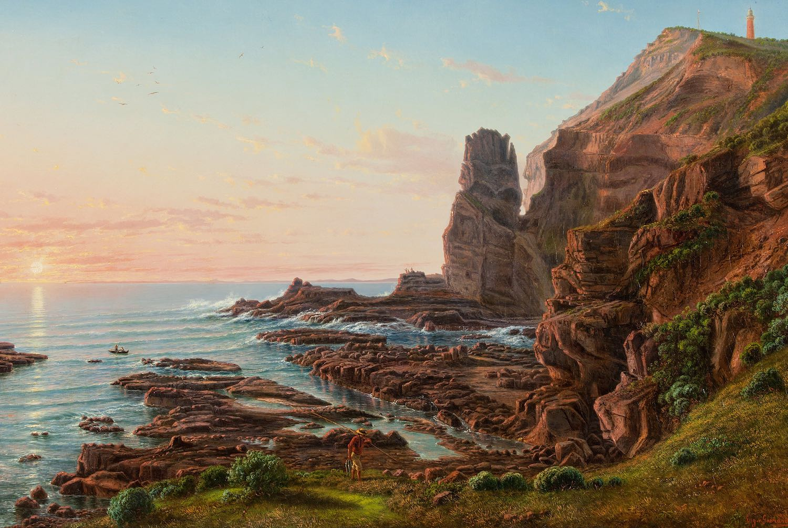

Eugene Von Guérard’s Castle Rock, Cape Schanck is a painting of a large, coastal rock face covered in grass, with a small lighthouse visible on top. This rock face slopes from a steep peak down to sea level. It is at this height at which the ocean is lapping at the deep red rocks. Just at the edge of where the grass has stopped and the rock begins at the sea-level side of the rock face stands a man, holding a long stick and wearing a wide-brimmed hat. This podcast discusses the importance of this painting, and why losing it would be devastating to Australia as a nation.
Introduction
Hey guys, it’s us; the second Team of Yeats. So, I was wondering today; is Eugene von Guérard’s painting even relevant today? But then I went online, and discovered that a few vexing foreigners™ are trying to obtain Eugene Von Guérard’s Castle Rock, Cape Schanck; a staple of Australian beach culture. As members of the Defend Eugene von Guérard’s Paintings Board in the Australian Government, it is our duty in this podcast to educate you, members of the general public, about the significance of this painting, and why losing this masterpiece would begine the decline of Australia as a nation.
Artist
Eugene von Guérard was born in Vienna on the 17th of November 1811, with an Austrian and German heritage. At age 15 he travelled along with his father to Italy, where he studied old masters and knowledge of painting from his father, who worked as the court painter. He later moved to Rome, where he studied at Giovanni Battista’s art school; he started studying at the Dusseldorf Academy of Art after his dad passed away. He later migrated to Australia in 1852 for the gold rush. Unfortunately(?), he failed at finding any gold, and decided to paint instead. Soon afterward, he travelled to Australia and New Zealand, creating many of his paintings there, such as Milford Sound, New Zealand, and Mount Abrupt. Von Guérard was awarded the title of first master painting at NGV, and the National School of Art in Melbourne. Von Guérard traveled back to London due to illness, and died at age 90. His paintings depict mountains and valleys, hovering above with a sense of higher value compared to humanity. Von Guérard focuses more on nature compared to humanity.
Audience
Eugene von Guérard’s work is held in storage in the art gallery of South Australia. The museum has kept it in the back because they don’t want anyone ruining it, but in actuality, we think it would be safer in an actual display. The main audience to the painting is the Australian students and teachers who visit the gallery. The audience regards the painting as a description of what the world should be like, and was like. During this time, pollution has destroyed the environment, so today the artwork is regarded as a call for help. Eugene wanted to show the beauty of nature, and how the world was perfect before pollution.
World
Eugene finds Australia’s landscape very æsthetically pleasing because he appreciates its topography. Eugene Von Guérard painted Australia because he came for the gold rush, but noticed the Australian coastline whilst on a boat migrating to Australia. He was amazed by the natural beauty that was completely unlike his home. He produced his paintings during the Romantic period, which focused on emotions, the individual, and increased appreciation of nature. Despite painting in the Romantic period, he painted with a realistic style that focused on reproducing the subject matter as accurately as possible.
Artwork
Eugene Von Guérard’s Castle Rock, Cape Schanck is an oil painting from 1865. It’s a painting of a coastal rock face covered completely in grass. The ocean, the sun, and the sky make up the background of it. While the main focal point in this work is a setting sun due to its bright colours, as well as the leading lines going towards it. The lighthouse, unusual against the rest of the scenery, and bright red against the blue sky, could also be considered a secondary focal point. Its painting expresses many different emotions. While most are happy, it also expresses joy and hope in this new land. The painting communicates a bright view of the future, which is communicated through the man looking out to sea, with the sun setting on a promising land. Pastels, used for the sky, and rich saturated colours, enhance this effect. Von Guérard saw beauty and promise in Australia, and he expressed this through art. Castle Rock, Cape Schanck is in the Romanticist style, which means that it doesn’t aim for realism; instead, it shows the subject matter in the most perfect and picturesque way possible. He applied paint most carefully, making sure no brush strokes were visible. Careful blending was also used to create a completely smooth texture, hiding the fact that it is a painting.
Foreigners
We shoudn’t sell Eugene von Guérard’s painting. In future use, it may be used as a way of seeing the pure landscape before it was developed, and before pollution.
Cultural significance
We can always look after the painting, and who knows what other countries will do to it. We can protect the history of Eugene von Guérard. All in all, it supports the culture of our art.
Revenue
It could be a staple of the Australian Art Gallery, and generate more money for the gallery via taxes, and increase money for the government.
Environment
Far into future, it may be used as a benchmark for how beaches looked prior to climate change.
Keeping paintings in a future society
Paintings in general, however, should be saved in a post-contemporary society if they have a significant philosophical or artistic value. A way to test if a painting might have philosophical value is if the artwork functions as a visual time capsule to the past. This is useful for a future society because it teaches us about the past, and can help stop us from repeating our past mistakes. If the painting has been a benchmark for art influencing society, it is also more likely to be of great philosophical value. As we already know, artistic techniques are very valuable, and works that are examples of developments in artistic style should also be kept.
Conclusion
Overall, it is vital to keep this painting, due to its extreme significance to Australian culture, and, therefore, the loss of this painting would be devastating.